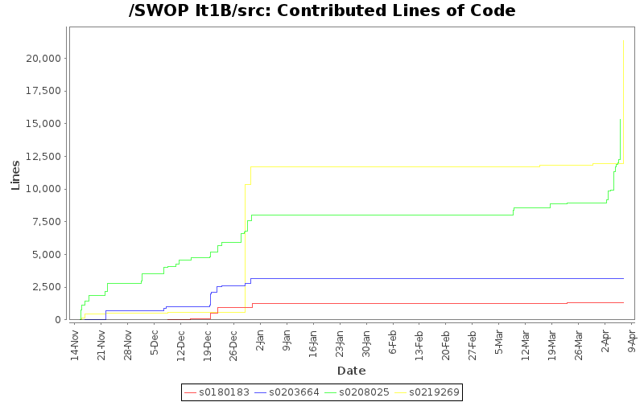
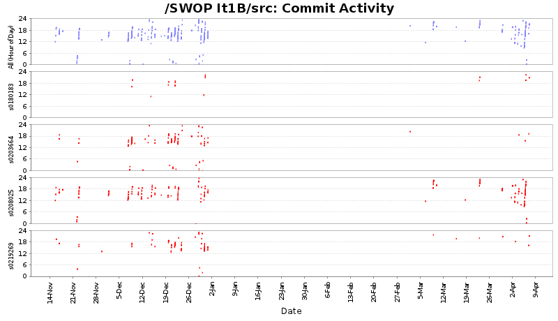
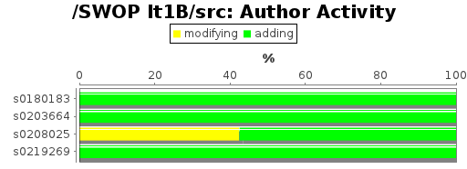
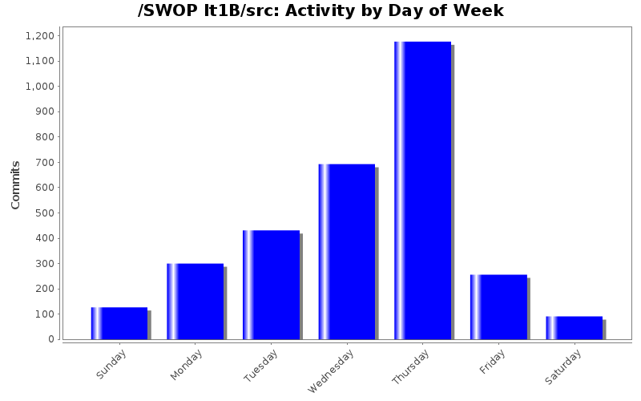

Developer of the Month
| Month | Author | Lines | Tweet This |
|---|---|---|---|
| April 2012 | s0219269 | 9428 |  |
| March 2012 | s0208025 | 967 | |
| December 2011 | s0219269 | 11206 | |
| November 2011 | s0208025 | 2812 | |
| Author | Author Id | Changes | Lines of Code | Lines per Change |
|---|---|---|---|---|
| Totals | 3075 (100.0%) | 41179 (100.0%) | 13.3 | |
| s0219269 | s0219269 | 474 (15.4%) | 21351 (51.8%) | 45.0 |
| s0208025 | s0208025 | 1975 (64.2%) | 15351 (37.3%) | 7.7 |
| s0203664 | s0203664 | 436 (14.2%) | 3181 (7.7%) | 7.2 |
| s0180183 | s0180183 | 190 (6.2%) | 1296 (3.1%) | 6.8 |
| Author | Up to 4/2011 | 5/2011 | 6/2011 | 7/2011 | 8/2011 | 9/2011 | 10/2011 | 11/2011 | 12/2011 | 1/2012 | 2/2012 | 3/2012 | 4/2012 |
|---|---|---|---|---|---|---|---|---|---|---|---|---|---|
| Totals | 0 (-) | 0 (-) | 0 (-) | 0 (-) | 0 (-) | 0 (-) | 0 (-) | 4001 (100.0%) | 20129 (100.0%) | 0 (-) | 0 (-) | 1214 (100.0%) | 15835 (100.0%) |
| s0219269 | 0 (-) | 0 (-) | 0 (-) | 0 (-) | 0 (-) | 0 (-) | 0 (-) | 526 (13.1%) | 11206 (55.7%) | 0 (-) | 0 (-) | 191 (15.7%) | 9428 (59.5%) |
| s0208025 | 0 (-) | 0 (-) | 0 (-) | 0 (-) | 0 (-) | 0 (-) | 0 (-) | 2812 (70.3%) | 5179 (25.7%) | 0 (-) | 0 (-) | 967 (79.7%) | 6393 (40.4%) |
| s0203664 | 0 (-) | 0 (-) | 0 (-) | 0 (-) | 0 (-) | 0 (-) | 0 (-) | 663 (16.6%) | 2518 (12.5%) | 0 (-) | 0 (-) | 0 (0.0%) | 0 (0.0%) |
| s0180183 | 0 (-) | 0 (-) | 0 (-) | 0 (-) | 0 (-) | 0 (-) | 0 (-) | 0 (0.0%) | 1226 (6.1%) | 0 (-) | 0 (-) | 56 (4.6%) | 14 (0.1%) |

| Month | Author | Lines | Tweet This |
|---|---|---|---|
| April 2012 | s0219269 | 9428 | |
| March 2012 | s0208025 | 967 | |
| December 2011 | s0219269 | 11206 | |
| November 2011 | s0208025 | 2812 | |



